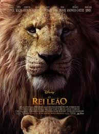
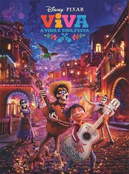
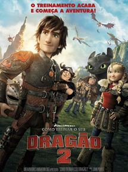
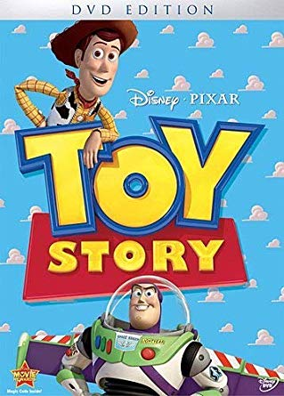

Aqui temos a lista das melhores animações feitas ate hoje:
1ºlugar: Rei leão

Sobe o sol, os pássaros voam pelo belo cenário africano, elefantes, zebras, girafas,
formigas e muitos outros animais caminham em direção a um grande acontecimento. Ao som da bela canção "Ciclo
sem Fim" ("Circle of Life", no original), Mufasa, o rei da floresta, reúne seus súditos para a apresentação
de seu filho Simba. O macaco Rafiki retira o leãozinho dos braços da mãe e o ergue no topo da Pedra do Rei.
2º lugar: Viva - A Vida é uma Festa

Miguel é um menino de 12 anos que quer muito ser um músico famoso, mas ele precisa lidar com
sua família que desaprova seu sonho. Determinado a virar o jogo, ele acaba desencadeando uma série de
eventos ligados a um mistério de 100 anos. A aventura, com inspiração no feriado mexicano do Dia dos Mortos,
acaba gerando uma extraordinária reunião familiar.
3ºlugar: Como treinar o seu dragão 2

Como Treinar o seu Dragão conquistou o público com uma bela mensagem de tolerância, sobre a
convivência pacífica entre humanos e dragões, aliada à sensível abordagem sobre deficiência física, que
atinge ambas as espécies.
4ºlugar: A Bela e a Fera

Em uma pequena aldeia da França vive Belle, uma jovem inteligente que é considerada estranha
pelo moradores da localidade, e seu pai, Maurice, um inventor que é visto como um louco. Ela é cortejada por
Gaston, que quer casar com ela. Mas apesar de todas as jovens do lugarejo o acharem um homem bonito, Belle
não o suporta, pois vê nele uma pessoa primitiva e convencida.
5ºlugar: Toy Story - Um Mundo de Aventuras

O aniversário de Andy está chegando e os brinquedos estão nervosos. Afinal de contas, eles
temem que um novo brinquedo possa substituí-los. Liderados por Woody, um caubói que é também o brinquedo
predileto de Andy, eles montam uma escuta que lhes permite saber dos presentes ganhos.